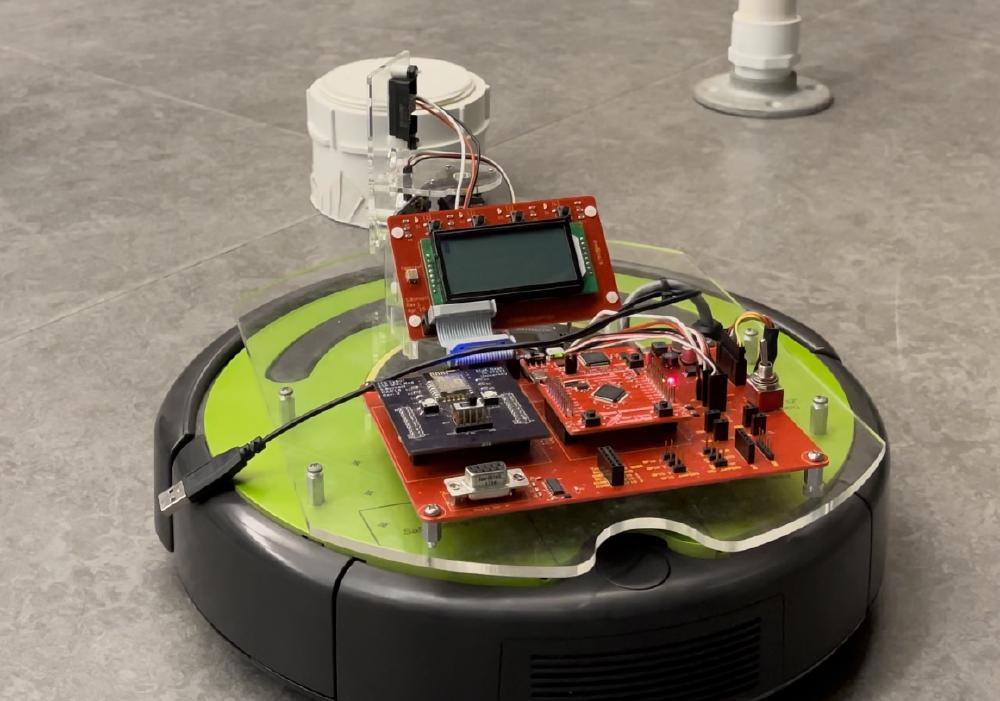

Maze-Solving Robot Proposal (CPR E 288)
Team proposal outlining a sensor-driven robot for maze navigation and mapping use cases.

CyBot platform
Overview
- Defined real-world motivation and user needs for safer exploration and search tasks.
- Planned a prototype maze robot with scanning sensors and basic autonomy.
- Outlined test field and evaluation approach.
Use Cases
- Cave mapping / spelunking support
- Search & rescue and hazardous-area scouting
- Building/maze traversal for safe reconnaissance
Planned Hardware (from proposal)
- IR sensor and PING ultrasonic sensor, mounted on a servo for 180° scan
- Cliff + bump sensors for obstacle and drop-off detection
- LCD display for status; Wi‑Fi for reporting locations/manual control
Design Documents
Files: